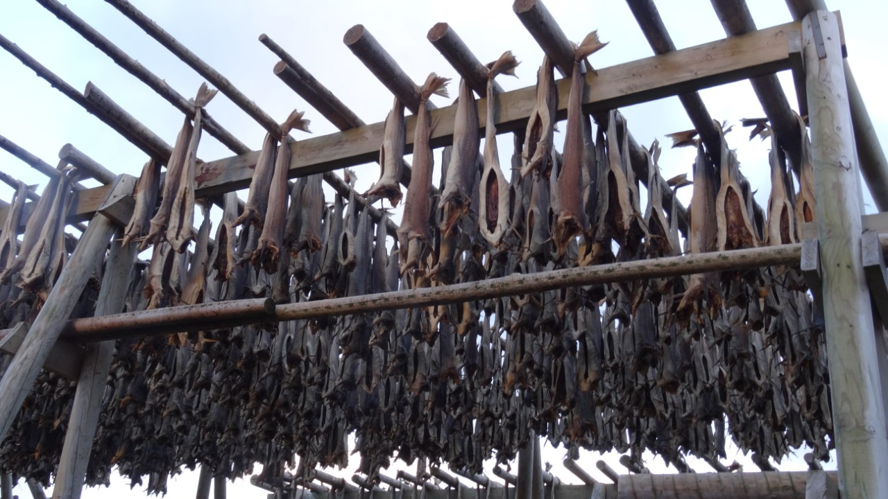

2 Food provision goal
2.1 Aquaculture sub-goal
Aquaculture index measures sustainable production of farmed fish in northern Norway. The table below explains the structure of aquaculture goal: the components of the goal and the data layers used to estimate them.
| Component of the goal | Data layers description | Temporal coverage | Data source |
|---|---|---|---|
| Production | Standing biomass of salmon and trout per municipality each month; amount of fish lost during the production | 2005-2018 | The Fisheries Directorate of Norway |
| Fish lost during production | Amount of fish died, escaped or lost due to other reasons during production each year | 2005-2018 | The Fisheries Directorate of Norway |
| Lice abundance | Average lice abundance at a farm, compared to thresholds abundance | 2005-2018 | Norwegian Marine Data Center, Barentswatch.no portal |
| MOM B examinations | The category of environmental impact at a farm from very good (1) to very bad (4) | 2005-2018 | The Fisheries Directorate of Norway |
2.1.1 Estimating sustainable aquacultlure
Aquaculture goal consists of two components: total production and sustainability indices. When both components are calculated, they are combined into the amount of aquaculture production (in tons og kg) produced sustainably.

Figure 1: Proportion of fisheries and aquacuture production in Finnmark
Below is the description of each component of the aquaculture sub-goal.
Annual production We calculated total annual aquaculture production per municipality, as follows: \[\begin{equation} Tot.prod = \triangle Biomass + Harvest - Discard - Seeded\ smolts \tag{1} \end{equation}\]
Biomass change and harvest were corrected for slaughter weight, by multiplying their weight by 0.88. The weight of smolts was assumed to be 100 grams, and the weight of discarded salmon - 5x0.88 = 4.4 kg.
Where, \(\triangle Biomass\) is the difference of standing biomass of fish in December of the given year minus December of the previous year, \(Harvest\) is biomass of fish harvested (kg); \(Seeded\ smolts\) is the biomass of smolts (kg), seeded for production at the beginning of the production cycle; \(Discard\) is the biomass of fish (kg) discarded at the slaughter plant, and Removed is the biomass of fish (kg) removed from the cages for slaughtering at another location or for other reasons
\(\triangle Biomass\) is the difference between standing biomass of fish in December of a given year minus standing biomass in December of the previous year. When it was not possible to subtract standing biomass of the previous year, for instance, when there was no fish in the cages at the end of the previous year, we calculated the difference between earliest and latest month of the give year, when there were fish in the cages.
For some municipalities, the total annual aquaculture production was negative, due to underestimation of fish biomass. In these cases, the total production was set to a missing value (NA). These missing values were replaced with a nearest observed production (either of the previous or of the following year). Of the 81 coastal municipalities in Northern Norway, 10 did not have aquaculture in any of the studied years (1994 - 2018):
- Andoy
- Berlavag
- Hemnes
- Malselv
- Prosanger
- Rost
- Tana
- Vado
- Vaeroy
- Vardo
For code on estimation of aquaculture production, please
For code on estimation of aquaculture production, please see here.
Economic feed conversion ratio (eFCR)
Economic feed conversion ratio (eFCR) is the ratio of the amount of feed used during the produciton of fish, to the final biomass of fish released to the market (Boyd et al. 2007).
We calculated eFCR as a ratio of total feed used for production in a county (Norwegian “fylke”), to the total biomass of fish produced annually in the county. The total feed consumption and total biomass produced per region were calculated as a sum of feed consumption and produced biomass of all municipalities within the county.
Economic feed conversion ratio (eFCR) is the ratio of the amount of feed used during the production of fish, to the final biomass of fish released to the market (Boyd et al. 2007).
\[\begin{equation} eFCR = \frac{Feed \ used,\ kg}{Biomass\ produced,\ kg} \tag{2} \end{equation}\]
We calculated eFCR as a ratio of total feed used for production in a county (Norwegian “fylke”), to the total biomass of fish produced annually in the county. The total feed consumption and total biomass produced per region were calculated as a sum of feed consumption and produced biomass of all municipalities within the county.
To calculate eFCR-based sustainability indicator, we compared eFCR between the northern Norwegian counties for each year. The municipalities, located in the county with the lowest eFCR got the highest score, and the other counties, and municipalities located in them, eFCR score was calculated as 1 minus percentage of difference between the given county’s eFCR and the minimal observed eFCR that year.
Lice prevalence
High lice prevalence at the aquaculture production site can cause a decrease in production rate and can also cause a higher lice infection pressure on wild salmonids (Bjørn, Finstad, and Kristoffersen 2001; Nilsen et al. 2017). In this study, we used a lice indicator developed by the Norwegian Food Authority (www.Mattilsynet.no), which compares the average abundance of lice reported weekly, with a threshold abundance of lice. In northern Norway, the threshold abundance of lice is set to be 0.5 lice per fish for all weeks, except weeks 21 to 26, when the thresholds is lowered to 0.2 (FOR-2012-12-05-1140).
Based on the lice monitoring by the Norwegian Food authority, we formulated indicator for our study in the following way. For the highest lice sustainability score over a year, each municipality should have lower than the threshold lice count throughout a year. In other words, the target of lice sustainability index is to keep lice under control at any time during the production cycle. For each production site, we estimated the proportion of weeks in a year when lice abundance is below a threshold and averaged this estimate for all locations within a single municipality. Thus, when all the aquaculture locations in a municipality in a given year were below lice threshold during all 53 weeks of a year, the municipality scored 1 for the lice indicator. Conversely, a small number of weeks when abundance of lice at production sites was below threshold resulted in a lower score.
Based on the lice monitoring by the Norwegian Food authority, we formulated indicator for our study in the following way. For the highest lice sustainability score over a year, each municipality should have lower than the threshold lice count throughout a year. In other words, the target of lice sustainability index is to keep lice under control at any time during the production cycle. For each production site, we estimated the proportion of weeks in a year when lice abundance is below a threshold and averaged this estimate for all locations within a single municipality. Thus, when all the aquaculture locations in a municipality in a given year were below lice threshold during all 53 weeks of a year, the municipality scored 1 for the lice indicator. Conversely, a small number of weeks when abundance of lice at production sites was below threshold resulted in a lower score.
\[\begin{equation} Lice \ index = \sum_{i = 1}^{N \ of \ sites}[\frac{n \ weeks\ below_ \ threshold}{total\ weeks}] \tag{3} \end{equation}\]
Missing values in lice score data were replaced with an average of the score over the recent 5 years with data, when more than 7 years of data were available. If only 7 or fewer year with data were available, we used all given years to calculate the average score and replace missing values with this score. For details on computation of the lice score, please follow this link.
Environmentlal monitoring - MOM B scores
In Norway, Modelling-Ongrowing fish farm Monitoring type B (MOM B) is the main management program for the monitoring of environmental impact from fish farms (Ervik et al. 1997).
The MOM B investigation involves analysis of sediments, taken directly below the farms and from the area up to 15 m beyond the farm. Three groups of sediment parameters are analyzed in MOM B: the presence and diversity of macro-infauna of the benthic sediments, pH and redox potential of the sediments, and sensory sediment variables (color, smell, consistency, gas ebullition, sludge thickness) (Norsk Standard 2016). This investigation is done less frequently than MOM A, usually one a year or every 2nd year but more frequently if high environmental impact was observed at the farm during the last monitoring (Norge 2016).
The producers are obliged to regularly run MOM B and report environmental status at their farms to the Fisheries Directorate of Norway. The outcome of the MOM B investigation is then scaled from 1 to 4, corresponding to very good, good, bad, and very bad environmental condition, respectively. When environmental impact at the farm is suspected to be bad (score 3 or 4), the Directorate can request an additional, and larger investigation of the environmental status (MOM C). When both investigations suggest a very bad environmental status at the farm, the Directorate may request to cease production until environmental conditions are improved (FOR-2008-06-17-822).
In this study, we used the scores of MOM B investigations to formulate the environmental impact index of aquaculture sustainability. We assumed that the extent of environmental impact from the production on the surrounding environment increases with the size of the farm, which is reflected in the maximal allowed production biomass (MAB). To estimate the environmental impact index, we calculated the sum of biomass of all the locations that scored 3 and 4 at the MOM B investigations, per municipality and year. Then, we calculated the proportion of this biomass to total biomass of all the farms located in a municipality each year, and 1 minus this proportion returned an environmental impact sustainability index.
\[\begin{equation} MOMB \ index = 1 - (\frac{MTB_{farms \ scored \ 3 \ and \ 4}}{MTB_{municipality \ total}}) \tag{4} \end{equation}\]
The resultant index can be interpreted as follows. For a highest score, all the production sites within a municipality should score 1 or 2 at MOM B investigations. Also, the lower the biomass and number of the sites that score 3 and 3 at MOM B, the higher the score.
2.2 Fisheries sub-goal
In the fisheries sub-goal, we utilized the annual catch statistics of the 6 economically important species of the Barents and Norwegian sea fisheries: North-East Arctic cod, capelin, haddock, Atlantic herring, saithe, Atlantic mackerel, and 2 crustacean species (deep water shrimp and kingcrab). The landings data for the 6 stocks for 1994-2017 were obtained from the Fisheries Directorate of Norway, under agreement, and the data for 2018 was downloaded from the online database of the Fisheries Directorate of Norway. For the calculation of the sustainability of fisheries, we used an MSY-based approach (Gullestad et al. 2017). The sustainability scores were defined based on the reference points of sustainable fisheries management (ICES), namely, the spawning stock biomass (SSB), the biomass at the maximum sustainable yield (Bmsy), the biomass level that triggers a management action (MSYBtrigger), instantaneous fishing mortality rate (F), the mortality at the maximum sustainable yield (Fmsy), and the limit reference point for fishing mortality (Flim). The fisheries reference points, F and SSB, are reflect whether fisheries exploits healthy stocks and whether it maintains the stability of stocks in future by limiting the fishing pressure on the stocks (Kleisner et al. 2013).
We estimated the B-score – sustainability score based on the SSB MSYBtrigger of each stock and as follows.
\[\begin{equation} B_{score} = \begin{cases} 1 & \text{if $SSB \ge MSYBtrigger$}\\ \\ 0 & \text{if $SSB \le Blim$}\\ \\ 1 - \frac{MSYBtrigger - SSB}{MSYBtrigger - Blim} & \text{ if $Blim < SSB < MSYBtrigger$} \tag{5} \end{cases} \end{equation}\]
The idea of the B-score is that a healthy stock, for which SSB is larger than MSYBtrigger scores highest. A stock for which SSB is below Blim, scores zero and is considered unhealthy, while the SSB/ MSYBtrigger ratios between zero and one, are scaled by the difference between MSYBtrigger and Blim as shown in the formula above. Importantly, unlike in the Ocean Health Index for the West Coast of USA (Halpern et al. 2014), we did not penalize study regions for underexploiting the stocks. Therefore, in our approach a highest score corresponded to ratio of SSB/MSYBtrigger of 1 or lager. The calculation of F-score is similar, and the highest F-score implies that mortality rate is below Fmsy, while mortality above Flim returns the lowest score. Finally, when F is below Flim but still larger than Fmsy, the F-score is scaled by Fmsy and Flim differences, as explained in formulas below.
\[\begin{equation} F_{score} = \begin{cases} 1 & \text{if $F \le Fmsy$}\\ \\ 0 & \text{if $F \ge Flim $}\\ \\ 1 - \frac{Fmsy - F}{Fmsy - Flim} & \text{if $Fmsy < F < Flim $} \tag{6} \end{cases} \end{equation}\]
The final stock sustainability scores were calculated as the mean of the B-score and F-score.
\[\begin{equation} Stock.score_{j,k} = \frac{F_{score\ j,k} +B_{score\ j,k}}{2} \tag{7} \end{equation}\]
Where j is stock and k is year. For some species (capelin, saithe) Flim and Fmsy values were not available. In these cases, the stock scores were based only on the B-scores. In addition, for saithe, no MSYBtrigger was available and instead, we used a SSB management trigger (220000) reported in ICES advice for saithe in 2019 ICES 2019 Advice. Similarly, for capelin, MSYBtrigger was not available, and we replaced it with the lowest observed SSB since 1994 (94000).
In addition to stock sustainability scores, we calculated the annual catch of each species in each municipality and divided it by municipality’s sea area (in \(km^2\)) to smooth the differences in total catch between the municipalities. There were also considerable interannual differences in total catches, and to smooth them we applied a 3-year rolling mean to catches of each stock using package zoo in R (Zeileis and Grothendieck 2005). Then, we compared catch in each municipality per year with the maximal observed catch per area of the same stock in the whole study region. However, catches between municipalities differed by several powers of magnitude (from less than 10 tons to about 10000 tons), therefore we used a 75th percentile of the total catch distribution per species as a reference maximal catch, and the municipalities that caught more than 75th quantile of the maximal catch, were assigned proportion 1. The catch weighted score was calculated as the product of proportion of catch per area to maximal catch per area and stock score of each species.
\[\begin{equation} Catch\ weighted \ score_{i,j, k} = \frac{Catch\ per\ area_{i,j,k}}{Catch\ per\ area_{max,j,k}}*Stock\ score_{j,k} \tag{8} \end{equation}\]
Where i, j, and k are single municipality, stock, and year, respectively. Finally, the fisheries goal score per municipality and year was calculated as the sum over all stocks of the product of catch weighted score and the proportion that each stock constituted of the total catch in a municipality.
\[\begin{equation} \begin{aligned} Fisheries\ score_{i,k} = \\ & \sum_{j = 1}^{N stocks}Catch\ weighted\ score_{i,j,k}\\ & * Catch\ proportion_{i,j,k}* 100 \end{aligned} \tag{9} \end{equation}\]
2.3 Combining the two sub-goals
To define the final Food Production goal per municipality and year, we combined the aquaculture sub-goal and fisheries sub-goal weighted by their proportional contribution to total ocean-based food production.
\[\begin{equation} W_{FP\ i, k} = \frac{P_{F\ i,k}}{(P_{F\ i,k} + P_{A\ i,k})} \tag{10} \end{equation}\]
\[~\] \[~\]
\[\begin{equation} \begin{split} Food\ provision\ total_{i,k} = \\ & (W_{FP\ i,k} * Fisheries\ score_{i,k})\\ & + (1 - W_{FP\ i,k}) *Aquaculture\ score_{i,k} \end{split} \tag{11} \end{equation}\] \[~\]
Where \(W_{FP}\) is the weight of annual fisheries production per municipality, \(P_{F\ i,k}\) is the production yield (tons) of fisheries in a single municipality per year, and \(P_{A\ i,k}\) is the production yield of aquaculture in a single municipality per year. In some years, a municipality could have only aquaculture production, but no catch was registered (e.g., Vevelstad in Nordland 2006-2010, Fig ##), or conversely, a municipality did not produce farmed fish, but had catches delivered (e.g., Anody in Nordland, Fig ##). In these cases, the Food Production goal was estimated based only on aquaculture- or fisheries yield, respectively.
2.4 Contribution of fisheries and aquaculture to the total seafood production yield: graphics
Below are the graphs of proportional contribution of aquaculture and fisheries total landings to ocean-based food production in northern Norway. The data is presented for each municipality of the three counties: Nordland, Troms, and Finnmark.
NordlandFigure 2: Proportion of fisheries and aquacuture production in Nordland
Figure 3: Proportion of fisheries and aquacuture production in Troms
Figure 4: Proportion of fisheries and aquacuture production in Finnmark
<<<<<<< HEAD # Literature ======= # Carbon storage >>>>>>> 04a09f65687f4fdf689d5b6277a17a2ad0b35a7c
Here is a review of existing methods.
<<<<<<< HEAD # Methods ======= # Clean waters >>>>>>> 04a09f65687f4fdf689d5b6277a17a2ad0b35a7c
We describe our methods in this chapter.
References
Bjørn, PA, B Finstad, and R Kristoffersen. 2001. “Salmon Lice Infection of Wild Sea Trout and Arctic Char in Marine and Freshwaters: The Effects of Salmon Farms.” Aquaculture Research 32 (12): 947–62.
Boyd, Claude E, Craig Tucker, Aaron McNevin, Katherine Bostick, and Jason Clay. 2007. “Indicators of Resource Use Efficiency and Environmental Performance in Fish and Crustacean Aquaculture.” Reviews in Fisheries Science 15 (4): 327–60.
Ervik, Arne, Pia Kupka Hansen, Jan Aure, Anders Stigebrandt, Per Johannessen, and Terje Jahnsen. 1997. “Regulating the Local Environmental Impact of Intensive Marine Fish Farming I. The Concept of the Mom System (Modelling-Ongrowing Fish Farms-Monitoring).” Aquaculture 158 (1-2): 85–94.
Gullestad, Peter, Anne Marie Abotnes, Gunnstein Bakke, Mette Skern-Mauritzen, Kjell Nedreaas, and Guldborg Søvik. 2017. “Towards Ecosystem-Based Fisheries Management in Norway–Practical Tools for Keeping Track of Relevant Issues and Prioritising Management Efforts.” Marine Policy 77: 104–10.
Halpern, Benjamin S, Catherine Longo, Courtney Scarborough, Darren Hardy, Benjamin D Best, Scott C Doney, Steven K Katona, Karen L McLeod, Andrew A Rosenberg, and Jameal F Samhouri. 2014. “Assessing the Health of the Us West Coast with a Regional-Scale Application of the Ocean Health Index.” Plos One 9 (6).
Kleisner, Kristin M, Catherine Longo, Marta Coll, Ben S Halpern, Darren Hardy, Steven K Katona, Frédéric Le Manach, et al. 2013. “Exploring Patterns of Seafood Provision Revealed in the Global Ocean Health Index.” Ambio 42 (8): 910–22.
Nilsen, Frank, Ingrid H Ellingsen, Bengt Finstad, and Peder A Jansen. 2017. “Vurdering Av Lakselusindusert Villfiskdødelighet Per Produksjonsområde I 2016 Og 2017. Rapport Fra Ekspertgrupper for Vurdering Av Lusepåvirkning.”
Norge, Standard. 2016. “Miljøovervåking Av Bunnpåvirkning Fra Marine Akvakulturanlegg.” Norsk Standard 9410: 2016.
Zeileis, Achim, and Gabor Grothendieck. 2005. “Zoo: S3 Infrastructure for Regular and Irregular Time Series.” arXiv Preprint Math/0505527.
Bjørn, PA, B Finstad, and R Kristoffersen. 2001. “Salmon Lice Infection of Wild Sea Trout and Arctic Char in Marine and Freshwaters: The Effects of Salmon Farms.” Aquaculture Research 32 (12): 947–62.
Boyd, Claude E, Craig Tucker, Aaron McNevin, Katherine Bostick, and Jason Clay. 2007. “Indicators of Resource Use Efficiency and Environmental Performance in Fish and Crustacean Aquaculture.” Reviews in Fisheries Science 15 (4): 327–60.
Ervik, Arne, Pia Kupka Hansen, Jan Aure, Anders Stigebrandt, Per Johannessen, and Terje Jahnsen. 1997. “Regulating the Local Environmental Impact of Intensive Marine Fish Farming I. The Concept of the Mom System (Modelling-Ongrowing Fish Farms-Monitoring).” Aquaculture 158 (1-2): 85–94.
Gullestad, Peter, Anne Marie Abotnes, Gunnstein Bakke, Mette Skern-Mauritzen, Kjell Nedreaas, and Guldborg Søvik. 2017. “Towards Ecosystem-Based Fisheries Management in Norway–Practical Tools for Keeping Track of Relevant Issues and Prioritising Management Efforts.” Marine Policy 77: 104–10.
Halpern, Benjamin S, Catherine Longo, Courtney Scarborough, Darren Hardy, Benjamin D Best, Scott C Doney, Steven K Katona, Karen L McLeod, Andrew A Rosenberg, and Jameal F Samhouri. 2014. “Assessing the Health of the Us West Coast with a Regional-Scale Application of the Ocean Health Index.” Plos One 9 (6).
Kleisner, Kristin M, Catherine Longo, Marta Coll, Ben S Halpern, Darren Hardy, Steven K Katona, Frédéric Le Manach, et al. 2013. “Exploring Patterns of Seafood Provision Revealed in the Global Ocean Health Index.” Ambio 42 (8): 910–22.
Nilsen, Frank, Ingrid H Ellingsen, Bengt Finstad, and Peder A Jansen. 2017. “Vurdering Av Lakselusindusert Villfiskdødelighet Per Produksjonsområde I 2016 Og 2017. Rapport Fra Ekspertgrupper for Vurdering Av Lusepåvirkning.”
Norge, Standard. 2016. “Miljøovervåking Av Bunnpåvirkning Fra Marine Akvakulturanlegg.” Norsk Standard 9410: 2016.
Zeileis, Achim, and Gabor Grothendieck. 2005. “Zoo: S3 Infrastructure for Regular and Irregular Time Series.” arXiv Preprint Math/0505527.